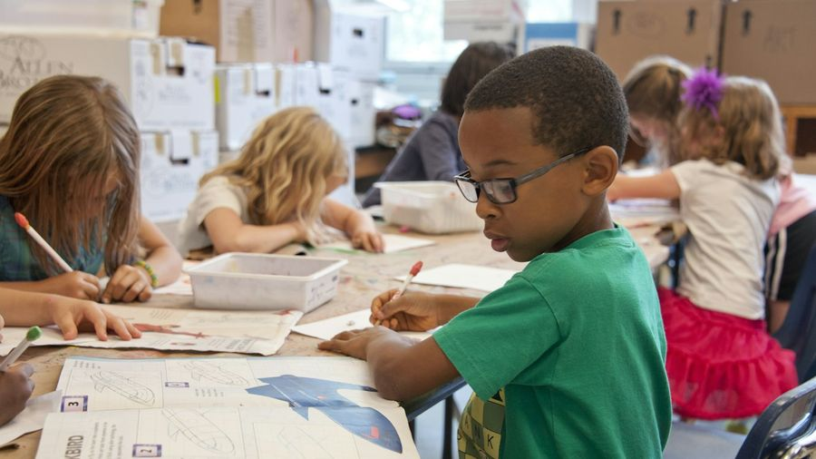
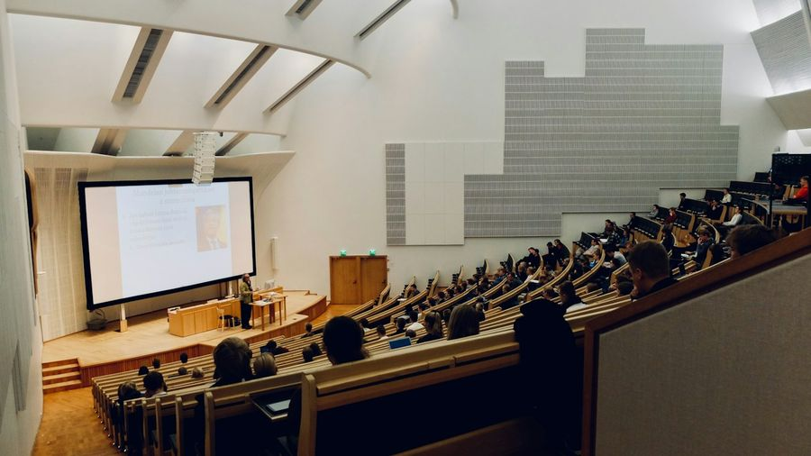

Grammatikfokus
Maskuline Nomen wie der Junge, der Student, der Kollege, die in allen Fällen außer dem Nominativ Singular ein -(e)n bekommen. Klar erklärt, geübt und gesprochen. 🧩
Die Regel in 3 Schritten
Wann bekommt ein Nomen ein -(e)n? Ganz einfach:


1️⃣ Was ist die n-Deklination?
„der Junge – ich sehe den Jungen – mit dem Jungen – das Rad des Jungen.“
Einige maskuline Nomen bekommen in allen Fällen außer dem Nominativ Singular die Endung -(e)n. Nur der Nominativ Singular bleibt ohne Endung: der Junge.

2️⃣ Welche Nomen gehören dazu?
Fast immer Personen oder Lebewesen: Nomen auf -e (der Junge, der Kollege, der Kunde), auf -ent / -ant / -ist (der Student, der Praktikant, der Polizist) und einige feste Nomen (der Mensch, der Nachbar, der Herr, der Bauer).

3️⃣ Endung -n oder -en?
Nomen auf -e bekommen nur -n: den Jungen, den Kollegen. Die meisten anderen bekommen -en: den Studenten, den Menschen. Sonderfall: der Nachbar → den Nachbarn.
| Nomen | Nominativ | Akkusativ |
|---|---|---|
| der Junge | der Junge | den Jungen |
| der Student | der Student | den Studenten |
| der Kollege | der Kollege | den Kollegen |
| der Nachbar | der Nachbar | den Nachbarn |
| der Mensch | der Mensch | den Menschen |
| der Kunde | der Kunde | den Kunden |
| Kasus | der Student | der Junge |
|---|---|---|
| Nominativ | der Student | der Junge |
| Akkusativ | den Studenten | den Jungen |
| Dativ | dem Studenten | dem Jungen |
| Genitiv | des Studenten | des Jungen |
| Nomen | Genitiv Singular | Besonderheit |
|---|---|---|
| der Name | des Namens | Genitiv auf -ns (nicht -en)! |
| das Herz | des Herzens | einziges Neutrum; Akk. „das Herz“ ohne -en |
| der Herr | des Herrn | Sg. -n, Plural die Herren (-en) |
| der Gedanke | des Gedankens | wie „Name“: Genitiv auf -ns |
| der Buchstabe | des Buchstabens | Genitiv auf -ns |
| der Bauer | des Bauern | nur -n |
🎡 Drehrad
Beispiele im Kontext
Mehrere Sätze pro Nomen aus dem echten Alltag + ein Mini-Dialog zum Aufklappen. Genau diese Nomen kommen im Sprechteil wieder! (Niveau oben umschalten.)
🎭 Mini-Dialog
A: Kennst du den Jungen da?
B: Ja, das ist der Junge von nebenan.

🎭 Mini-Dialog
A: Wer ist das?
B: Das ist der Student aus meinem Kurs.
🎭 Mini-Dialog
A: Magst du den neuen Kollegen?
B: Ja, der Kollege ist super nett.
🎭 Mini-Dialog
A: Hast du den Nachbarn gesehen?
B: Ja, der Nachbar war im Garten.

🎭 Mini-Dialog
A: Wie findest du ihn?
B: Ich finde den Menschen ehrlich.
🎭 Mini-Dialog
A: Was will der Kunde?
B: Ich berate den Kunden gleich.

🎭 Mini-Dialog
A: Wer macht das?
B: Ich zeige es dem Praktikanten.

🎭 Mini-Dialog
A: Was will er?
B: Ich zeige dem Touristen den Bahnhof.
🎭 Mini-Dialog
A: Wen fragst du?
B: Ich frage den Polizisten dort.
🎭 Mini-Dialog
A: Weißt du das?
B: Nein, ich frage den Experten.
🎭 Mini-Dialog
A: Wie geht es ihm?
B: Dem Patienten geht es besser.
🎭 Mini-Dialog
A: Wer ruft an?
B: Ich spreche mit dem Journalisten.

🎭 Mini-Dialog
A: Kennst du ihn?
B: Ja, ich gebe dem Herrn die Hand.
🎭 Mini-Dialog
A: Wessen Büro ist das?
B: Das ist das Büro des Kollegen.
🎭 Mini-Dialog
A: Wie war der Name?
B: Den Namen habe ich leider vergessen.

🎭 Mini-Dialog
A: Was sagt dein Herz?
B: Mein Herz sagt ganz klar ja.
🎭 Mini-Dialog
A: Wer spricht gleich?
B: Ich begrüße zuerst die Herren.
🎭 Mini-Dialog
A: Was meinst du?
B: Der Kern des Gedankens ist Freiheit.

🎭 Mini-Dialog
A: Welcher Buchstabe fehlt?
B: Ich sehe den Buchstaben nicht gut.

🎭 Mini-Dialog
A: Wem gehört das Feld?
B: Das ist das Feld des Bauern.
🎭 Mini-Dialog
A: Worüber sprichst du?
B: Über die Rechte des Menschen.
🎭 Mini-Dialog
A: Wessen Auto ist das?
B: Das ist das Auto des Nachbarn.
Üben
Gemischte, interaktive Übungen — die Antworten sind quer gemischt (nicht der Reihe nach). Niveau oben umschalten.

✍️ Welche Form passt?
🖼️ Bild-Quiz: Welche Form?
„Ich treffe ___ in der Pause.“„Ich helfe ___.“„Ich grüße ___.“„Wir vertrauen ___.“„Im Grunde ___ ist er gut.“„Die Form ___ ist rund.“✅ Endung: -n, -en oder nichts?
🔀 Nomen ↔ richtige Form
Nominativ
Akkusativ
Satz
Form
Genitiv-Phrase
Form
🧩 Nomen ↔ Typ
Nomen
Typ
🏆 Das große n-Deklination-Quiz
🗣️ Sprechen & wiederholen
Die 90-Sekunden-Challenge: Thema ziehen, Stichpunkte lesen und 90 Sekunden am Stück frei sprechen. Passt sich dem Niveau an (oben umschalten).
⏱️ 90-Sekunden-Challenge
💬 Dialoge zum Mitlesen
Lest die kurzen Alltagsszenen zu zweit laut vor – Rolle A und Rolle B. Die markierten Teile zeigen das n-Deklinations-Nomen. Tauscht danach die Rollen. Zum freien Üben: unten eine Seite verdecken – die andere spricht frei, zum Prüfen auf die verdeckte Blase tippen. (Niveau oben umschalten.)